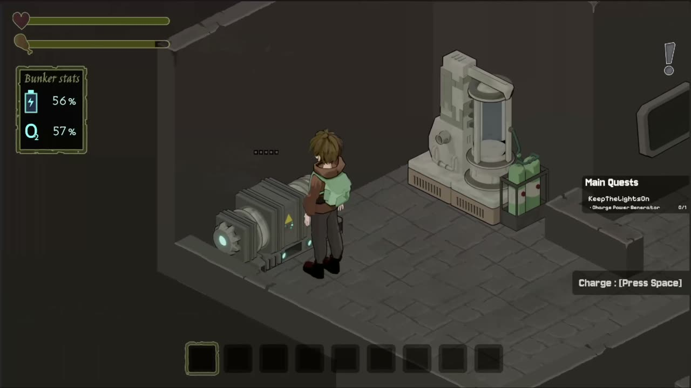

World 01
The Bunker
Your hub, built from 3D models rendered down to PNG sprites. Power and oxygen generators, a workstation, storage, the 3D converter and a computer with its own apps for managing the bunker and your collection.